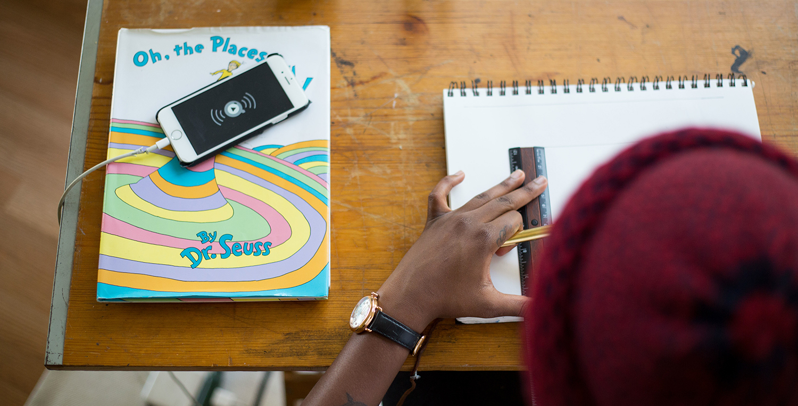

Typography
Typeface
1. Source San Pro - Regular 🔗Source Sans Pro is a sans serif typeface created by Paul D. Hunt for Adobe Systems. It is the first open-source font family from Adobe, distributed under the SIL Open Font License.
The typeface is inspired by the forms of the American Type Founders' gothics by Morris Fuller Benton, such as News Gothic, Lightline Gothic and Franklin Gothic, modified with both a larger x-height and character width and more humanist-influenced italic forms.
Lato is a sanserif typeface family designed in the Summer 2010 by Warsaw-based designer Łukasz Dziedzic (“Lato” means “Summer” in Polish). In December 2010 the Lato family was published under the open-source Open Font License by his foundry tyPoland, with support from Google.
Font Size
reviews - main content (20px)
reviews - title (30px)
header - menu bar (19px)
Colors
background page #3a3a3a
menu bar #fcfcfc
links #42bcf4